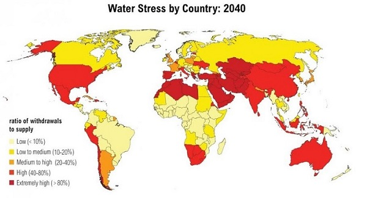

países más críticos
del mundo
más crítico en
América Latina

Limitada seguridad hídrica que afecta a los USUARIOS DEL RECURSO HÍDRICO
Abastecimiento de agua potable y saneamiento
Riego de cultivos y actividades agroindustriales
Generación hidroeléctrica y biodiversidad
Mayor conflictividad social por uso del agua
Afectación a la salud pública
Reducción de productividad agrícola
Incremento de brechas territoriales urbano-rurales
QUE AFECTA A LOS USUARIOS DEL RECURSO HÍDRICO
Afectación de la calidad del agua
Contaminación minera, urbana y agrícola
Deficiente manejo de disponibilidad
4.4M en déficit | 9.1M en umbral
Perú: 180 m³ per cápita almacenamientoAlta vulnerabilidad climática
Pérdida de bosques (2013–2021)
Alteración del régimen hidrológico y eventos extremos
Meta: tendencia descendente sostenida
Recuperación de fuentes naturales prioritarias
Cuencas críticas en proceso de restauración
Indicador Clave
% Cuencas evaluadas en cantidad y calidad: 2.52%
% Estudios de Evaluación de RRHH elaborados
Base 2023
33.33%Meta 2030
3.70%% Estudios de Diagnóstico de Calidad de RRHH elaborados
Base 2023
11.67%Meta 2030
6.67%N° Formalizaciones de Vertimientos otorgados
Base 2023
51Meta 2030
10N° Fiscalizaciones de vertimientos de agua residual
Base 2023
404Meta 2030
400"Regular, evaluar y fiscalizar hoy es garantizar agua segura mañana."
El PEI 2025–2030 habilita la gestión estratégica institucional.
Su aprobación permite iniciar la ejecución articulada de metas, consolidar la gobernanza hídrica y avanzar con predictibilidad hacia la seguridad hídrica y el futuro deseado.